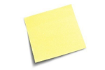

<ion-menu [content]="mymenu">
  <ion-content>
    <ion-list>
      
      <button ion-item *ngFor="let page of pages" (click)="goToPage(page.component)" menuClose>
        <ion-icon item-left name="{{ page.icon }}"></ion-icon>
        {{ page.titulo }}
      </button>
    </ion-list>

  </ion-content>
</ion-menu>
<ion-nav #mymenu [root]="rootPage"></ion-nav>
